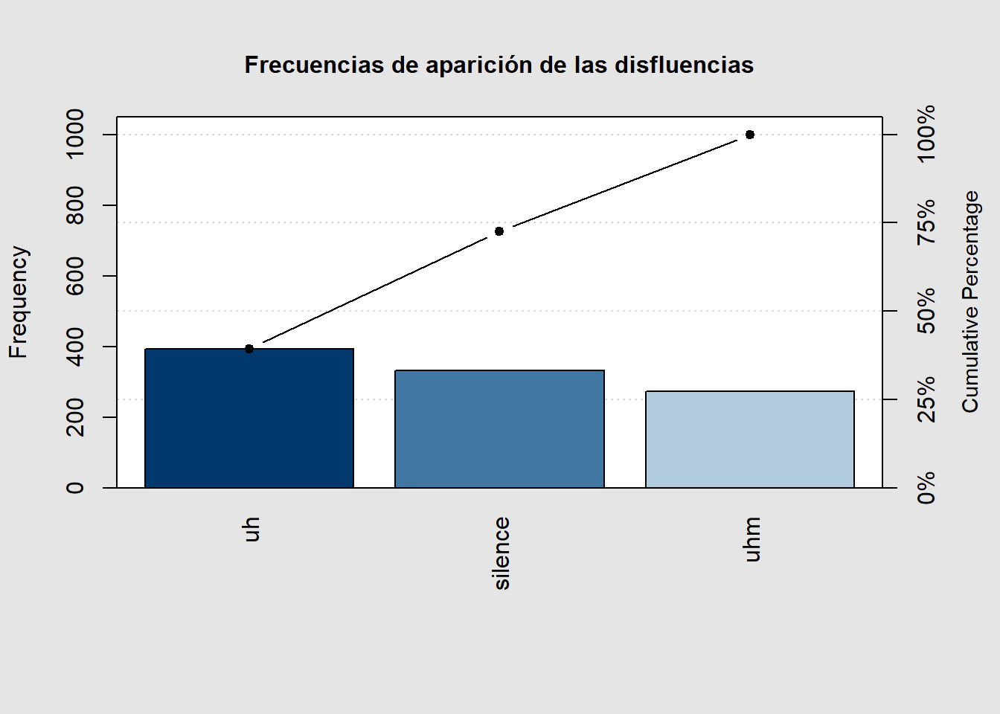
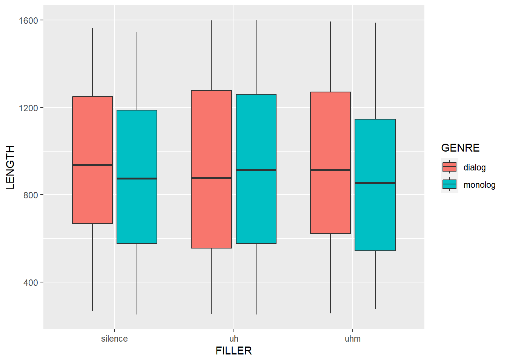

Taller 1
1. Preregistro (2.0)
En este punto realizaremos un preregistro de nuestro proyecto de grado. El objetivo de este documento es definir qué datos trataremos cuantitativamente, definir las hipótesis y el procedimiento de análisis. Redacte de manera clara los siguientes aspectos de su investigación:
Descripción: describa el problema y el propósito de la investigación de manera clara y concisa.
Hipótesis: formule la hipótesis principal teniendo en cuenta la revisión de los antecedentes que realizó para redactar su anteproyecto de grado. Si su trabajo tiene una orientación descriptiva o exploratoria, lo más conveniente es formular la hipótesis como una hipótesis no direccional. Ahora, hay temas de investigación con un número amplio de antecedentes: en este caso es más fácil elegir una hipótesis direccional y replicarla con nuevos datos.
Análisis: aclarar si se trata de un estudio experimental o exploratorio (de corpus). Justifique su respuesta con base en la bibliografía discutida en las primeras tres sesiones de clase.
Variables: en este apartado explique qué variables dependientes y qué variables independientes analizará en su trabajo. Explique si son variables nominales, ordinales o de razón.
2. Análisis de información estadística (2.0)
Los datos que observará a continuación hacen parte de una investigación sobre disfluencias. La tabla nos dice si los hablantes usaron uh, uhm o silencios (FILLER). También dice si los hablantes son hombres o mujeres (SEX), si los datos provienen de un diálogo o un monólogo (GENRE) y cuántos milisegundos dura cada disfluencia (LENGHT). A continuación podemos ver el resumen de las variables:
str(tabla1)'data.frame': 1000 obs. of 5 variables:
$ CASE : int 1 2 3 4 5 6 7 8 9 10 ...
$ SEX : chr "male" "female" "female" "female" ...
$ FILLER: chr "uhm" "silence" "silence" "uhm" ...
$ GENRE : chr "monolog" "monolog" "dialog" "dialog" ...
$ LENGTH: int 1014 1188 889 265 465 1278 671 1079 643 1165 ...
silence uh uhm
332 394 274 
Pareto chart analysis for table(tabla1$FILLER)
Frequency Cum.Freq. Percentage Cum.Percent.
uh 394.0 394.0 39.4 39.4
silence 332.0 726.0 33.2 72.6
uhm 274.0 1000.0 27.4 100.0Pregunta: Teniendo en cuenta los conceptos de frecuencia absoluta, frecuencia relativa y frecuencia acumulada, describa los datos correspondientes a las disfluencias uh, uhm y silence. En la figura usted cuenta con las apariciones, los porcentajes y la línea indica el valor de las frecuencias acumuladas.
2.1. Medidas de tendencia central
Pregunta: teniendo en cuenta el diagrama de cajas y las medidas de tendencia central para la variable LENGTH (duración de las disfluencias), escriba un párrafo respondiendo si las disfluencias varían en función del estilo de habla (diálogo vs. monólogo). Asegúrese de usar la terminología estudiada en el libro de texto del curso.

$silence
media mediana desviacion RangoIntercuartil
917.7741 901.5000 366.5210 599.7500
$uh
media mediana desviacion RangoIntercuartil
919.5203 900.0000 397.1644 699.5000
$uhm
media mediana desviacion RangoIntercuartil
905.2956 887.5000 379.4992 656.2500 3. Proporciones (1.0)
Los datos que usaremos en este ejercicio Mapa sonoro de las Lenguas Nativas de Colombia de la Dirección de Poblaciones del Ministerio de Cultura de Colombia que contiene información básica de 62 lenguas de Colombia para 2017.
a. Con la función table obtenga el número de lenguas que están en los diferentes grados de vitalidad. Aquí debe resultar una fila con los diferentes niveles de esta variable, y debajo otra fila con las frecuencias absolutas.
b. Transforme estos datos a proporciones y luego a porcentajes.
c. Haga un diagrama de pastel (con porcentajes) y describa la figura usando la terminología estudiada en el libro de texto.